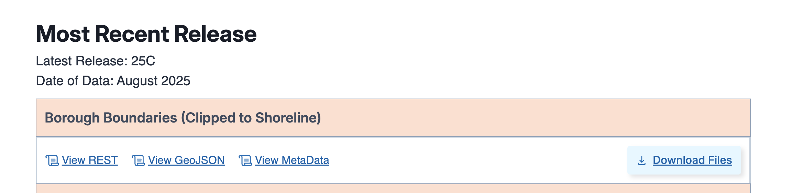
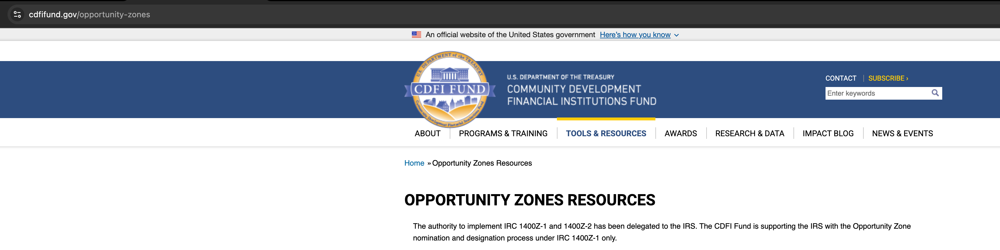
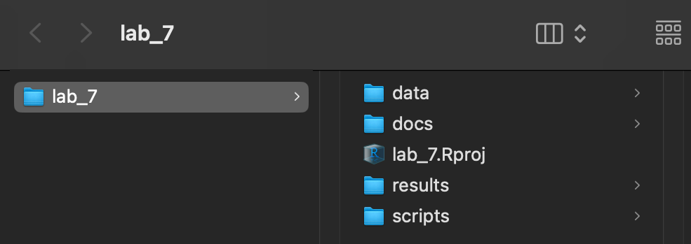
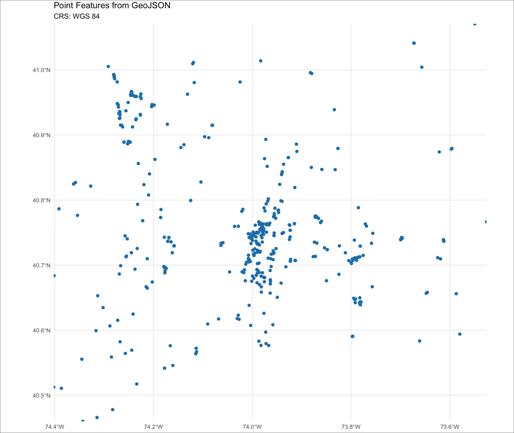
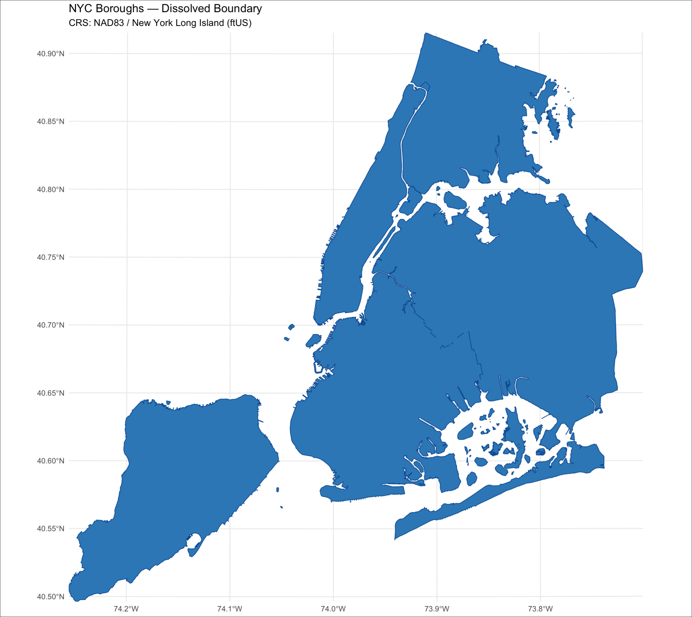
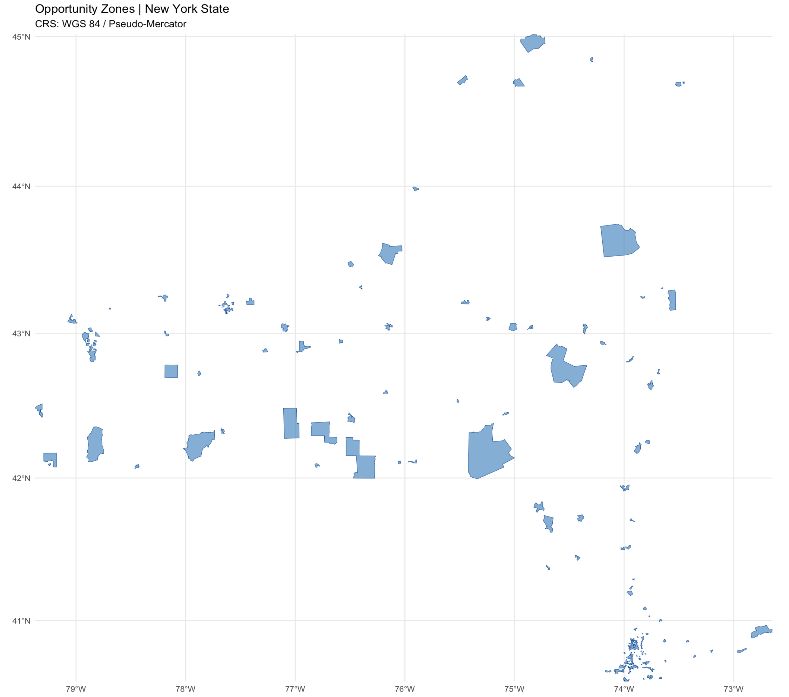
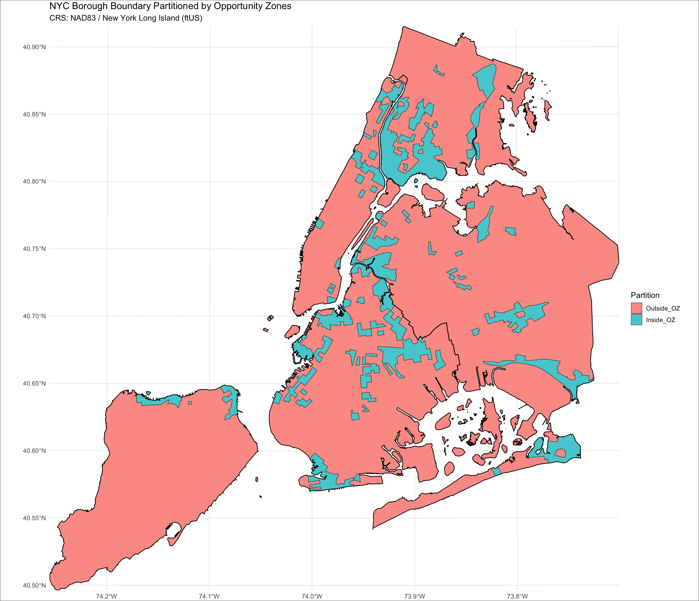
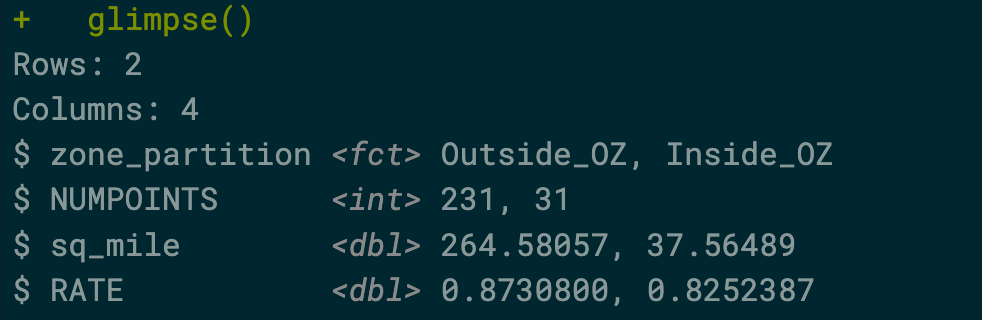
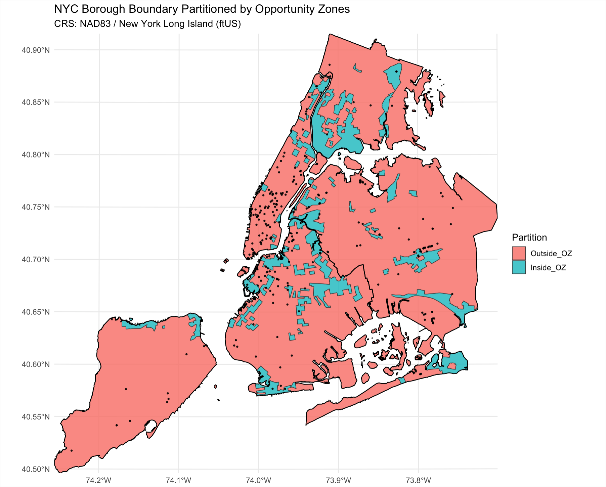

Class 7 Lab: Spatial Overlay Techniques with the sf Package
Fall 2025 | Instructor: Stephen Metts | PGUD 5160 - CRN 2247
Preamble
In this seventh demonstration lab, we will continue to repeat the project setup phase of previous weeks (setting the working directory to lab_7) then move along to working with the sf package for vector features. This lab can and should be used in conjunction with this week’s assignment 7 deliverable - Assignment 7.
Data
In this week’s lab, we will transform several data sources from disparate sources/agencies (OpenStreeMap vs. NYC vs. Federal Agency) operating at different scales ranging from global to city. This is a typical constraint: data that is designed for different purposes, at different scales. An early goal is to then create a project area that will be valid given these differences.
To start, we will utilize OpenStreetMap’s (OSM) Overpass Turbo feature to query the OSM dataset for ATM locations in the general NYC Area.
Second, we will access NYC Planning Features - the New York City Borough Boundary clipped to Shoreline
Third, we will access the US Tresury Opportunity Zone features.
U.S. Treasury Opportunity Zones are economically distressed areas designated to attract long-term private investment through tax incentives. Established under the Tax Cuts and Jobs Act of 2017, the program encourages investors to reinvest capital gains into these designated zones to spur economic development and create jobs in low-income communities.
With these three data resources, we will first organize them within R, specifically with sf and tidyverse. Our goal will be to first map ATM locations from OSM, and then spatially analyze the relationship of the locations to both ‘inside’ NYC Opportunity Zones and ‘outside’ NYC Opportunity Zones. Through comparison, we determine if the coverage and rate are similar or significantly different given the ‘inside’ vs ‘outside’ predicates Opportunity Zone areas in NYC.
This lab comes will important caveats:
- As we are using open-source, ‘non-agency’ data from OSM, we cannot assume this dataset is complete nor authoritative.
It can be difficult to get a complete picture of all ATM locations from official government data alone, but financial services providers and analytics firms compile comprehensive datasets that are updated frequently. The main challenges are that many ATMs are independently owned and operate outside of a bank’s official branch network.
- We cannot fully correlate the location of ATMs to Opportunity Zones as spatial priorities and reasoning across the two features are significantly different. In the case of ATMs, their siting is highly correlated with infrastructure features, commercial corridors and existing facilities ranging from large big box locations to small businesses and small stores. Opportunity zones are determined primarily by demographics collected by the US Census; and further, their boundaries are determined in fact by census tracts. So we should be wary of overstating any spatial relationship or correlation. We can, however, validly map and test a simple assumption:
Opportunity Zones are designed to spur economic investment in geographies that fall under the large umbrella of ‘underserved’. We might ask the question given our data constraints: “are the locations and rates of ATMs inside Opportunity Zones similar or significantly different than those locations and rates outside Opportunity Zones.
While we run the risk of a spurious correlation, the methods that we will use will be a good primer for spatial overlay analyses typical of the sf package.
The following data sources are already organized in the substitution data folder:
The NYC Borough Boundary clipped to shoreline version .shp download appears as follows:

The OSM Overpass Turbo query for ATMs in the NYC Region:

The US Tresury Opportunity Zone Resources Site:

For lab_7, we will download a prepared data directory that has all necessary data for both this week’s lab as well as assignment:
This data subdirectory will be in .zip format; make sure to uncompress the directory before engaging it with this week’s lab script. Further, change the name from lab_7_data-subdirectory to simply data and place it into your lab_7 directory.
Step 1: Project Management in RStudio for lab_7 (also applicable for assignment_7)
As we have done for previous labs, we will create a lab_7 project directory:

A well-organized folder structure within an RStudio project is crucial. Common conventions include:
data/: For raw data (treated as read-only).
docs/: For documentation or R Markdown files.
results/: For outputs and generated results.
scripts/: For R scripts and analysis pipelines.
Step 2:
With the lab_7.Rproj established and the subdirectories for our data analyses established, we can print both the working directory and all the paths and files therein:
Your ‘upstream’ path will likely be different than Users/x15… if you are using macOS, your full path would be akin to /Users/your_machine_name/Desktop/lab_7. On macOS, this can also be expressed as ~/Desktop/lab_7:
The tilde ~ is a special character that acts as a shortcut for the current user’s home directory.
This is fine; we want to simply make sure that the directory we created - lab_7 is indeed the directory in which and from which we are and will be working.
Step 3:
For this week’s lab, utilize the following script in conjunction with the previous data subdirectory download.
Open the script from the scripts subdirectory: File>Open File>lab_7>scripts>c7_lab7-script-1.r
To start, tidyverse and sf packages we’ve installed in past labs and assignments. However, we are introducing a new package tmap which allows for interactive mapping - a nice feature to have to explore our data results.
Next, we read in the OSM data export for ATMs in the NYC region. We’ll then make a quick plot map to make sure our points are indeed plotting to the NYC region; we’ll follow this with a quick tmap interactive version of the ATM points.

Our next feature is the NYC borough boundaries that comes from NYC Planning. We read this feature in as a .shp, converting it to a sf object. As we simply want the outer edge - or rather extent of the boroughs - we use a spatial overlay technique to dissolve all the features within the object to just one object, i.e. the ‘outer edge’ of the five boroughs in polygon format. We term this object nyc_union as we are using the st_union() function to do this dissolve:
When the dissolve is complete, we plot the result which should appear as follows:

Moving along, we now read in the US Tresury Opportunity Zones as .shp; once complete we also use sf to dissolve all individual polygons into just one polygon representing all Opportunity Zone territory within NYS. We can also plot the results as follows:

In review of our three plots, we can see that we have been using a subtitle function to read out the current CRS in the plots. As such, we can see that all three features reside within three different CRSs - WGS84 > NAD83/NY Long Island > WGS84/Psuedo-Mercator.Soon to follow, we will need to ensure that all overlay data is in the same CRS. We will choose the local CRS (EPSG: 2263) as our analysis CRS.
Step 4:
Since our analysis extent is NYC, we want to develop a geometric condition where we have ‘inside’ Opportunity Zones and ‘outside’ Opportunity Zones; and further, we want this to be just within the 5 borough boundary - not the larger NYS extent of the current Opportunity Zone object. We use several sf overlay functions to do this process:
st_intersection()st_difference()st_collection_extract()st_make_valid()st_set_precision()
Once complete, we should resolve to the following feature partitioned to an ‘outside’ and an ‘inside’ Opportunity Zones all within the boundary of NYC 5 boroughs. This is the ‘analysis frame’ by which we will evaluate the ATM locations. As the ATM locations are mapped atop the new ‘inside’ vs ‘outside’ partitions, we want to know how many and where those ATM locations occur based on this ‘inside’ vs ‘outside’ categorical distinction. Our plot result before proceeding should appear as follows:

While the spatial operation to count the ATM points within each of the partitions is relatively straightforward, in order to get an areal rate we need to create new geometry attributes in the spatial object. Since we know that this featue is already in a CRS with US Foot units, any area will first return as ft^2 . We utilize the st_area(geometry) function, naming the new object borough_partition_area:
borough_partition_area <- borough_partition %>%
mutate(
area_ft2 = as.numeric(st_area(geometry)), # st_area returns units; coerce to numeric ft^2
sq_mile = area_ft2 / FEET_PER_SQ_MILE # total square miles per partition
)Next, we have to match the CRS of the ATM points to the underlining borough_partition_area in order to correctly complete the overlay operation:
# ---- Reproject ATM points to 2263 ---
points_sf_2263 <- points_sf %>%
st_make_valid() %>%
st_transform(2263)
# Inspect CRS
message("CRS: ", st_crs(points_sf_2263)$input %||% st_crs(points_sf_2263)$wkt)Moving onto the spatial overlay function known as a spatial join, we employ the following, and name the result NUMPOINTS:
st_join()with the argumentjoin = st_within
Next, we deploy the operation left_join to incorporate the NUMPOINTS to the spatial object borough_partition_area and then compute the rate for each partition.
Once complete, we can print our results to the Console using function glimse():
 This result tells us what we wanted to know. Further we can plot the results first using ggplot; and then to follow, using tmap to explore the points atop the partitions in greater detail:

ggplot map of ATM locations atop Oppportunity Zone PartitionsConcluding Remarks
In this seventh demonstration lab, we explored further the sf package and its overlay spatial functions. In Assignment 7 we will utilize some of same/similar approaches to both spatial and non-spatial objects.
Scripts & Backup Data:
Class 7 Lab 7 R Script #1 - open in your RStudio
scriptsFile>Open File>lab_7>scripts>c7_lab7-script-1.r